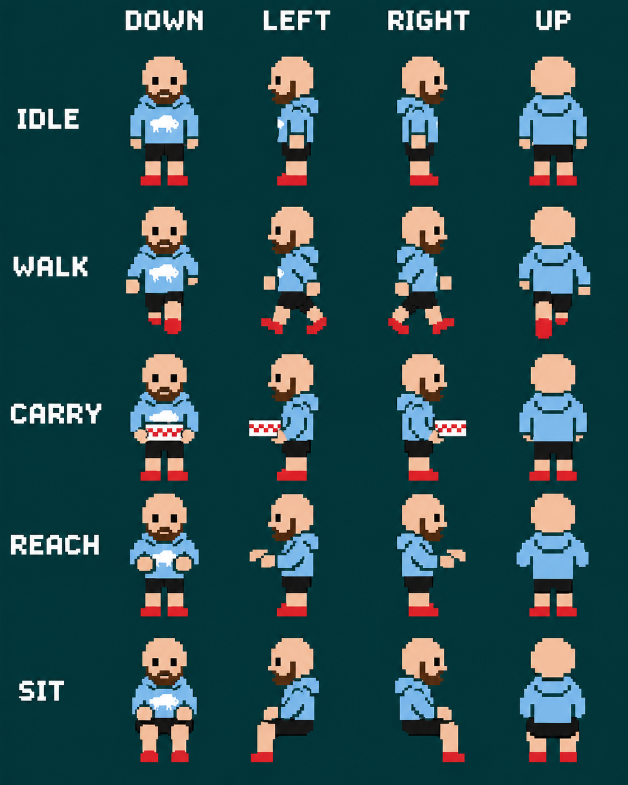

what needs to change
The painted backgrounds and block shaped actors use different levels of detail. The arcade shows the biggest mismatch. Arms point beside machines, sitting often reuses standing legs, and prop overlap is handled with a few rectangular clips.
Use one pixel grid, a small shared palette, discrete animation frames and explicit contact anchors. Keep the current layouts recognizable. Split furniture into back and front layers so hands and bodies can sit between them.
Reachable paths are checked in code. Contact sheets below show frozen poses, not a claim that every animated interaction passes. Full animation and phone checks remain part of implementation.
scene drafts
These are style studies from image generation. They still have identity, lettering and pixel grid inconsistencies. They are not replacement game assets.
player model draft
One proposed silhouette across five actions and four facings. This is a design sheet. It still needs exact pixel cleanup, contact anchors and complete animation cycles. The rear carry pose also needs a clear grip.

current character models
These sheets use the current game renderer. Read each row left to right as down, left, right and up. Controls request each pose even when that model does not support it. An unchanged standing sprite exposes a missing pose. The pose list defines the required artwork separately.
animals and companions
Scout shows side, front, back and sleep. Companions show down, left, right, up, happy and sleep. Happy and sleep currently ignore facing.
what counts as done
Every listed pose has named frames and a facing. Hands stay attached to the right control, book, leash or held item. Feet stay on the floor. Seated hips stay on the seat. Furniture hides the right parts of the body. The same checks pass through approach, action, turn and exit.
Review all four directions, pizza carrying, each companion and character size, each animation frame, each lighting phase and reduced motion. Check desktop and phone in a browser before replacing any live art.
model and interaction definitions · findings and next changes · image prompts